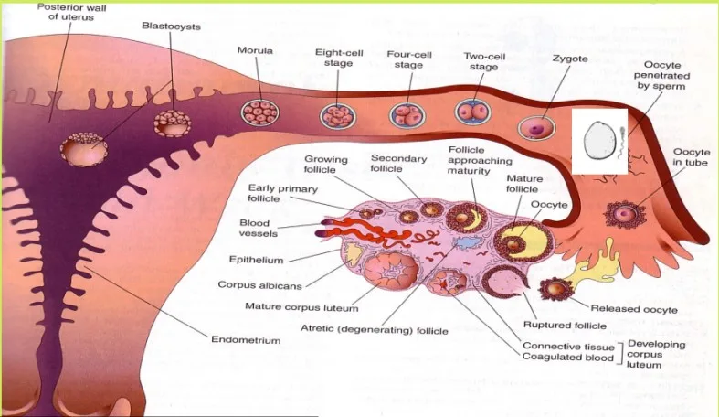

Expanded Nursing Uganda Explanation
Fertilization and Embryology should be reviewed through safe maternal and newborn assessment, early recognition of danger signs, respectful communication and timely referral. Connect the definition to vital signs, bleeding, fetal or newborn wellbeing, patient education and local protocol requirements.
01 EMBRYOLOGY
Embryology is the study of embryo development . This includes the developmental process of a single-cell embryo to a baby.
Embryogenesis is the process by which an embryo develops into a foetus .
It begins when an ovum and sperm meet and fertilization( the union of the male gamete (sperm) and the female gamete (oocyte) to form a zygote. The fertilization results in the formation of a zygote . The zygote undergoes rapid division, developing into a morula , then a blastocyst , an embryo, and finally a fetus .
The entire process culminates in childbirth after approximately nine months.
02 FERTILIZATION
Fertilization is the fusion of male and female gametes . The process involves several stages:
1. VAGINA
During intercourse, approximately 400,000,000 spermatozoa are deposited into the vagina. They swim through the vaginal mucosa, but its acidic environment eliminates many; only the strongest survive. Some are unable to penetrate the cervical mucosa.
2. CERVIX
Spermatozoa surviving the vaginal acidity enter and traverse the cervix, aided by the arbor vitae and cervical crypts, which prevent them from flowing back into the vagina. They then move through the uterus and into the fallopian tubes. This journey takes 2 to 7 hours.
3. FALLOPIAN TUBES
Movement slows due to ciliary action and peristaltic movements of the tube. Fertilization occurs in the ampullary region of the uterine tube , its widest part, located near the ovary. Spermatozoa can remain viable in the female reproductive tract for three days but cannot immediately fertilize the oocyte. They undergo changes:
- Capacitation : This involves the removal of a glycoprotein coat and seminal plasma proteins from the acrosomal region of the spermatozoon head, enhancing flagellar movement. The ruptured acrosome releases hyaluronidase, an enzyme that erodes the ovum’s wall, allowing the sperm head to enter. The ovum then secretes a substance sealing its cell membrane, preventing other sperm penetration. This process lasts approximately 7 hours in humans. The sperm’s body and tail detach and are absorbed.
- Acrosome Reaction : Acrosin and trypsin-like substances are released to penetrate the zona pellucida and corona radiata. The zona pellucida, a glycoprotein shell surrounding the ovum, facilitates sperm binding and induces the acrosome reaction.
- Fusion of oocyte and sperm cell membranes and pronuclei : A zygote is formed, receiving glycogen nourishment from the uterine goblet cells.
CHROMOSOMES
Fertilization restores the diploid chromosome number. The zygote contains 46 chromosomes : 23 from the father and 23 from the mother . One chromosome from each parent is a sex chromosome, determining the baby’s sex. An X-carrying sperm produces a female (XX) embryo, and a Y-carrying sperm produces a male (XY) embryo. Sex is determined at fertilization.
03 First Week of Development (Pre-embryonic)
The first week involves the formation of a zygote , morula , and blastocyst . Ciliary action in the fallopian tube transports the zygote towards the uterus (3 days after fertilization or 7 days after ovulation). Mitotic divisions increase cell number (2, 4, 8, 16, called blastomeres ). Around day 4, compaction forms a cell mass called a morula .
Clinical Note: Cell differentiation begins, determining which cells will form specific organs; injury at this stage can result in limb or organ loss.
04 Second Week of Development
During the second week of development, the blastocyst forms the decidua , becomes embedded in the endometrium , and begins forming the placenta. As the blastocyst embeds in the endometrium, the trophoblast differentiates into two layers:
- the syncytiotrophoblast and the cytotrophoblast .
The inner cell mass also begins to develop, and changes occur in the endometrium as it prepares to support the growing embryo.
The endometrium is now called the decidua and no longer sheds. The decidua thickens, and its middle layer becomes vascular and edematous. The glands in the decidua secrete nutrients such as glycogen to nourish the embryo.
Clinical Note : hCG, produced by the syncytiotrophoblast , is detectable in urine via medical pregnancy tests within the second week of gestation
The decidua is divided into three parts:
- Decidua Basalis – The part of the decidua that lies between the blastocyst and the myometrium.
- Decidua Parietalis – The compact layer that covers the blastocyst and separates it from the uterine cavity.
- Decidua Vera/Capisularis – The true decidua, which is the modified mucosal lining of the uterus.
Clinical note : Decidua reaction and implantation may lead to bleeding due to increased blood with lacunae spaces and rupture of capillaries. This occurs around the 13th day after fertilisation; bleeding lasts 1 to 2 days may be confused with normal menstruation and thus confuses marking the date of conception. It is called implantation bleeding .
During embedment, the trophoblast and inner cell mass continue to grow and differentiate. The trophoblastic cells form three layers: Syncytiotrophoblast, Cytotrophoblast and Mesoderm.
These layers form finger-like projections called villi , which invade the decidua and blood vessels. By 12 weeks, the villi disappear, and the chorionic membrane is formed. The placenta is fully developed by this time and takes over the production of progesterone from the corpus luteum.
05 Embryonic Period (3rd to 8th Week)
This phase is known as the period of organ formation or organogenesis . It starts from the third week and continues until the eighth week of development. During this time, the main organ systems of the body are established.
1. Formation of Three Germ Layers :
- The cells of the embryoblast (inner cell mass) differentiate into two layers: the epiblast and hypoblast , forming the bilaminar embryonic disc .
- Through a process called gastrulation , these layers form three primary germ layers: ectoderm , mesoderm , and endoderm , each giving rise to specific organs and tissues.
2. Amniotic and Yolk Sacs :
- The amniotic sac is lined by ectoderm cells , and the yolk sac is lined by endoderm cells . Between these two cavities lies mesoderm cells . The developing fetus is formed from the embryonic plate, which is made up of endoderm cells.
1. Ectodermal Germ Layer : The ectoderm forms important parts of the nervous system and skin. Its derivatives include:
- Central and peripheral nervous systems
- Sensory organs (eyes, nose, ears)
- Epidermis (skin), hair, nails
- Glands such as mammary and subcutaneous glands
- Tooth enamel
2. Mesodermal Germ Layer: The mesoderm forms bones, muscles, blood vessels, and connective tissues. Key derivatives include:
- Cranial and spinal bones (vertebrae)
- Muscles and connective tissue
- Blood vessels and blood cells
- Lymphatic system, kidneys, and reproductive organs
- Serous membranes (lining of body cavities like pleura, peritoneum, and pericardium)
3. Endodermal Germ Layer : The endoderm primarily forms the lining of internal organs. Key derivatives include:
- Gastrointestinal tract (GIT)
- Epithelial lining of the respiratory system
- Liver, pancreas, thyroid, and parathyroid glands
- Lining of the urinary bladder and urethra
- Parts of the auditory system (middle ear and auditory tube)
Clinical Notes
- Most major organs develop between the third and eighth weeks. Exposure to harmful substances, like smoking or alcohol, during this period can cause birth defects.
- Abortions during this stage result in the loss of a human life, stressing the importance of careful consideration.
The amniotic sac fills with fluid (amniotic fluid) over time, allowing the fetus to float and move freely. By the time of full formation, the fetus is suspended in this fluid inside the sac, providing a protective environment.
Body Stalk and Yolk Sac
The body stalk connects the trophoblast to the inner cell mass and eventually forms the umbilical cord, which carries blood between the fetus and placenta. Part of the yolk sac becomes the digestive tract, while the rest disappears into the umbilical cord, forming a structure known as the vitelline duct . By the end of this process, the fetus is floating in amniotic fluid, connected to the placenta by the umbilical cord, and surrounded by two membranes: the amnion (inner) and the chorion (outer).
06 Fetal Period (9th Week to Birth)
The fetal period begins at the start of the ninth week and continues until birth. During this time, the following key developments occur:
- Organ and Tissue Development: The organs and tissues that began forming during the embryonic period continue to mature and develop further.
- Rapid Growth : There is a significant increase in the fetus’s size, including both weight and height.
- Placenta Functionality : The placenta becomes fully developed and plays a critical role in nourishing the fetus and supporting its growth.
- Duration of Pregnancy: A full-term pregnancy is typically 280 days (about 40 weeks) from the first day of the last menstrual period.
07 Parturition (Birth)
The exact signals that initiate labor are not fully understood. However, preparations for labor usually begin between 34 and 38 weeks. This is influenced by:
- A decrease in progesterone levels
- An increase in prolactin
- A reduced withdrawal of prostaglandins, which helps soften the cervix and prepare the uterus for labor.
- Define fertilization.
- Describe the events in the vagina, cervix, fallopian tube, and uterus in the early stages of development.
- Explain the characteristics that determine an individual’s traits.
- Define capacitation.
- Discuss the causes of implantation bleeding.
- List the layers involved in the formation of the placenta.
- Explain how the fetus develops.
- Describe the development of the placenta.
- Define nidation.
- Outline the layers of the decidua.
- Describe the formation of the decidua.
- Explain the changes in the first week of development.
- Describe the activities of the second week of development.
- Summarize the embryonic period.
- Explain the derivatives of the endodermal germ layer.
- Outline the derivatives of the ectodermal germ layer.
- List the derivatives of the mesodermal germ layer.
- Define neurulation.
- Describe the fetal period.
- Define parturition.
08 Nursing Uganda Clinical Lens
Use Fertilization and Embryology as a practical nursing topic, not only a memorized definition. Read the topic through the safety of two patients: the mother and the fetus or newborn.
- What to understand first: define fertilization and embryology, identify the normal or expected pattern, then explain what changes when the patient is unwell.
- Why it matters in care: the nurse must recognize risk early, explain findings clearly, document accurately and know when to escalate.
- How to revise it: connect each point to assessment, nursing diagnosis or care problem, intervention, rationale and evaluation.
09 Assessment Guide
- Maternal vital signs, bleeding, pain, contractions, uterine tone and danger signs.
- Fetal or newborn wellbeing, feeding, temperature, breathing and activity.
- History of pregnancy, parity, medications, allergies, investigations and referral risks.
10 Nursing Priorities, Rationales and Outcomes
- Recognize danger signs early and escalate without delay.
- Provide respectful communication, privacy, infection prevention and clear documentation.
- Teach the mother what to monitor at home and when to return urgently.
The rationale for these priorities is patient safety: nursing actions should prevent deterioration, reduce discomfort, support recovery and create clear evidence for the next caregiver.
- Expected outcome: Mother and baby remain stable, danger signs are acted on early, and the family understands follow-up instructions.
11 Patient Teaching and Revision Check
- Explain fertilization and embryology in simple language the patient or caregiver can repeat back.
- Teach warning signs, medicine or follow-up instructions, hygiene or lifestyle points where relevant.
- For exams, prepare a short answer using: definition, causes or risk factors, signs, assessment, management, complications and prevention.
- For ward practice, document baseline findings, actions taken, patient response and the plan for review.
Illustrations and Diagrams (1)

Related Video Lectures
Watch nursing lecture videos on YouTube for this topic. Opens in a new tab.
Watch on YouTubeExternal link: YouTube may use its own cookies and terms. Nursing Uganda is not affiliated with YouTube.